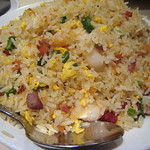

Spam Fried Rice
All Recipes

Image credit: Krista on flikr
Ingrediants
- 1 can of Spam, cubed
- 2 cups of cooked rice
- 2 eggs, beaten
- 1 cup of mixed vegetables (peas, carrots, corn)
- 2 tablespoons of soy sauce
- 2 tablespoons of vegetable oil
- Salt and pepper to taste
Directions
- Heat 1 tablespoon of vegetable oil in a large skillet over medium heat.
- Add the cubed Spam and cook until browned, about 5 minutes.
- Push the Spam to one side of the skillet and add the remaining oil.
- Add the mixed vegetables and cook for 3-4 minutes until tender.
- Push everything to one side and pour the beaten eggs into the skillet, scrambling them until fully cooked.
- Add the cooked rice and soy sauce, mixing everything together. Cook for an additional 2-3 minutes.
- Season with salt and pepper to taste. Serve hot.